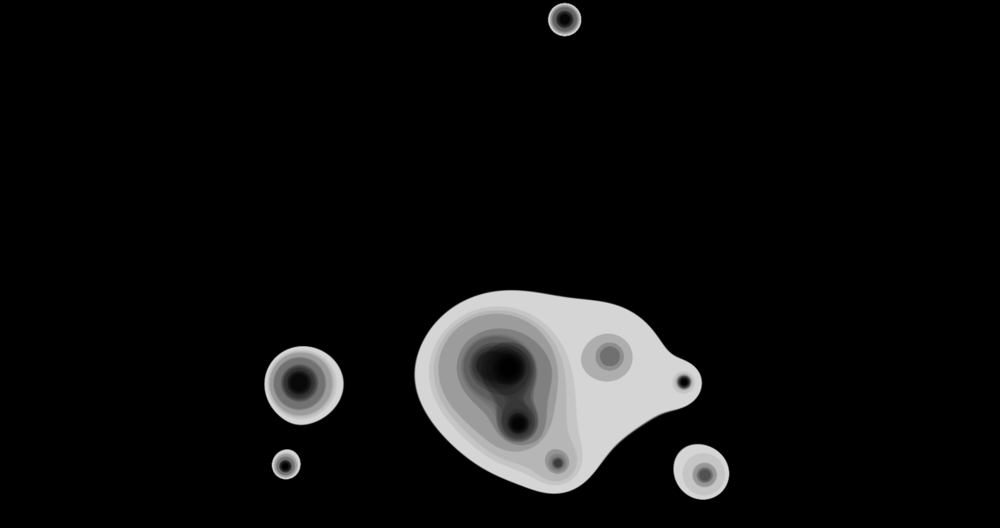
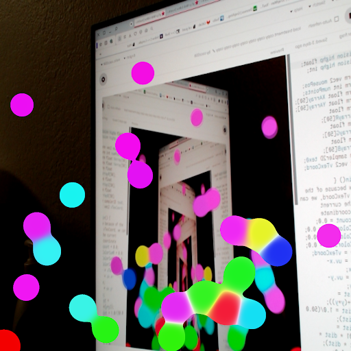
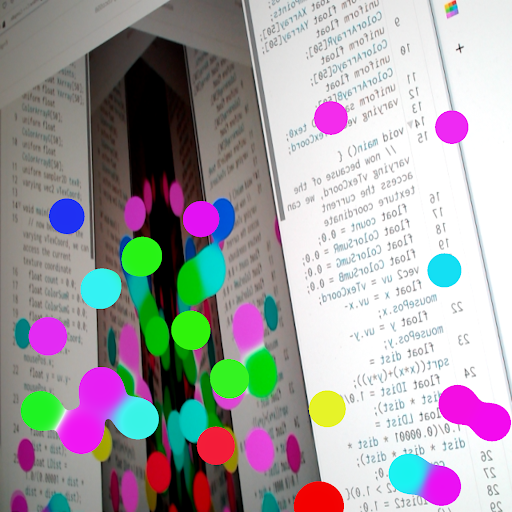

Experiment 4: Images, Video, & Sound Art
Imitate
for Imitate, I decided to create something similar to the metaballs example from the animation and interactivity lecture:
I have done this before, but I used this as an excuse to learn how to use shaders in p5.js. I first implemented the shader for the metaballs. Click to start:
https://editor.p5js.org/coco558/sketches/PsIc9485r
The shader does calculations on every pixel using the graphics card. The calculation is to loop through every metaball and find the sum of 1 / (DistFromMetaballToPixel)^4. It then colors every pixel with a high enough sum. I then added movement in the form of the physics in my Experiment 3. Click to start:
https://editor.p5js.org/coco558/sketches/CYSjWZkk0
https://editor.p5js.org/coco558/sketches/pwuwj4pKZ
https://editor.p5js.org/coco558/sketches/38KdhXpwa
Integrate
I decided to Integrate the metaballs with the webcam. the photos show the webcam being pointed at my monitor:
 This just makes uncolored pixels the color of the webcam in the shader. the webcam had to be flipped for this to work. Click to start:
https://editor.p5js.org/coco558/sketches/HeLqMEPGX
Innovate
For my innovation, I decided to make the metaballs warp the webcam. The vector from each pixel to each metaball is found, and then the pixel finds the weighted sum of these vectors based on the distances from the metaballs. I added this weighted sum to the location I sampled from the webcam at for each pixel. Use w and s keys to change mouse metaball size. Click to start:
https://editor.p5js.org/coco558/sketches/3LVL18vUg
this is what happens when I point my webcam at my monitor:

I don't really know where the colors come from because my code isn't adding them. For my finishing touches, I finalized the warping code and I added the color blending again from the earlier versions. Use wsad for changing properties of the mouses metaball. Click to start:
https://editor.p5js.org/coco558/sketches/Gi4NgghtR
I really like how you can see each individual metaball based on its color. I was also really happy with the color blending.
Reflection
I really enjoyed working on shaders for this project. I've really wanted to learn how to use them for a long time but this is my first time actually doing it. I have a lot of other ideas for shaders for future projects because their speed creates many opportunities for otherwise impossible projects. I like how the Expirament turned out, and it was really interesting to see what happened when I pointed the camera at my screen; It often looked like flames. One of the more difficult parts was figuring out how to put it on my webpage. I figured out that I needed everything in one file so I used separate code for the website version.